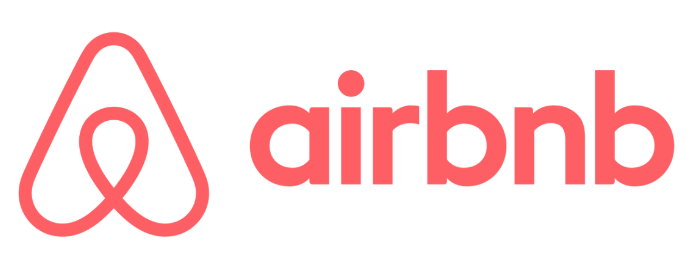

Blogs
These are my Blogs. Do give them a Read-
Social Distancing Monitoring
The progressing Covid 19 pandemic made an enormous circumstance for huge businesses to manage to attempt to keep up safe separation between representatives to guarantee well being and ensure the work is proceeded with unhindered .This project and it’s modification is an attempt to solve and assist the companies towards safe and better functioning ensuring none of the employee is affected as a result of covid 19 pandemic while working by ensuring that they follow social distancing by monitoring over them through video in workplace.Video Analysis is a domain of understanding and working on video to determine and use various spatial and temporal events and features of video . Python language with it’s libraries of image/video processing and Artificial Intelligence is used to perform the tasks.
-
A Blog on AirBnB Listing Price
The search for an ideal accommodation on travelling has been a real issue in recent years. AirBnB has revolutionised the way people think of finding places to stay. It has allowed people to open up their homes to visitors and stay at far more interesting places than the same old drab hotels. We using Data analytic tools and Data visualizations techniques have tried to provide eventful insights into data set. And general findings from data sets have been used by machine learning process to generate a prediction on price.